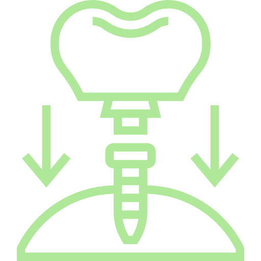
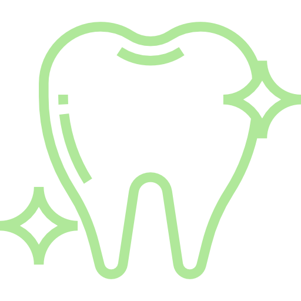
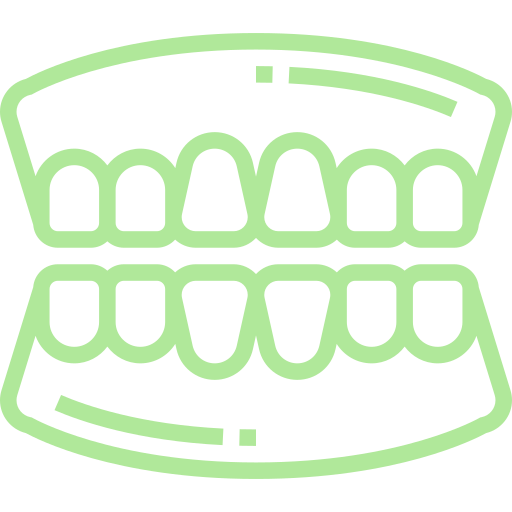
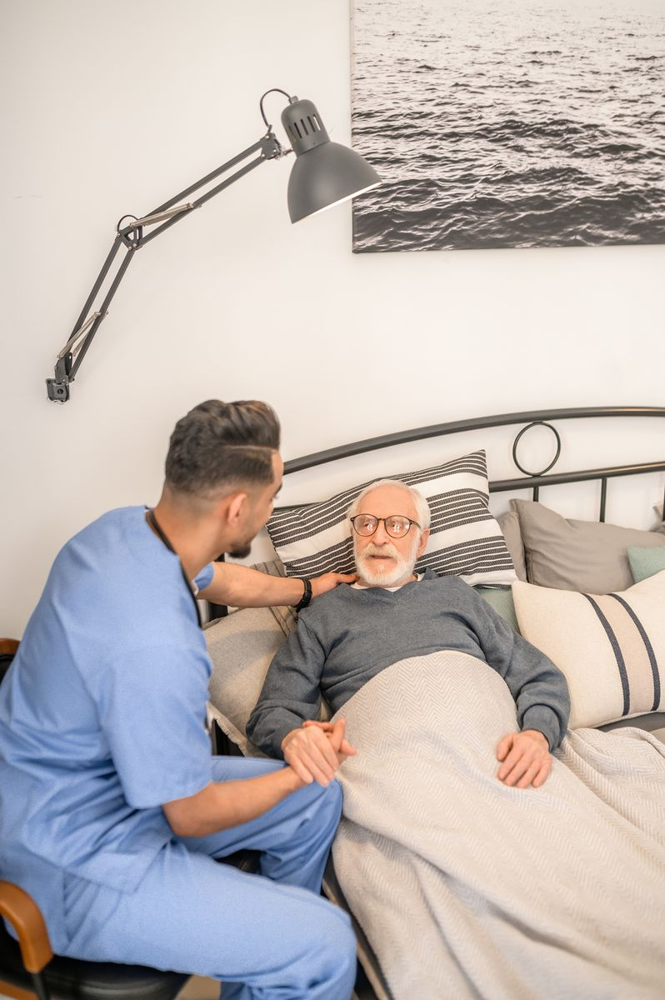
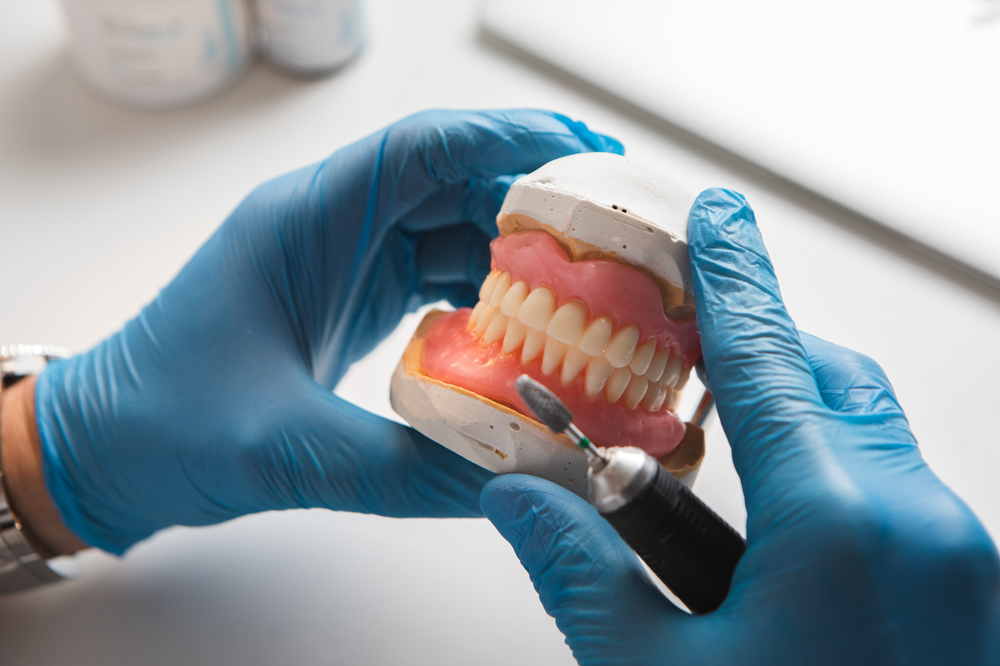

Protetyka stomatologiczna Poznan
Wiemy, jak trudna moze byc utrata zebow i zwiazane z tym problemy. Jako rodzinna pracownia z ponad 20-letnim doświadczeniem, oferujemy nie tylko protezy, ale przede wszystkim zrozumienie, troske i indywidualne podejscie do kazdego pacjenta.
Umów bezpłatną konsultacjęzadzwon i zapytaj
Potrzebujesz pomocy?
Godziny otwarcia
Bukowska 45: pn, śr, czw 15:00-16:00
Górna Wilda 82: pn, śr, pt 10:00-11:00
Lokalizacja
Bukowska 45, Poznań
Górna Wilda 82, Poznań
Kompleksowe usługi protetyczne w sercu Poznania

Ekspresowa naprawa protez
Wiekszosc napraw (pekniecia, zlamany zab) wykonujemy na miejscu, nawet w 15 minut. Dzieki wlasnej pracowni pacjent odzyskuje komfort niemal od reki.
Dowiedz sie wiecej o naprawach
Nowoczesne i wygodne protezy elastyczne
Dzieki nim pacjenci zapominaja o metalowych klamrach i dyskomforcie, zyskujac naturalny i piekny usmiech. Lekkie, dyskretne i idealnie dopasowane.
Sprawdz protezy elastyczne
Opieka protetyczna w domu pacjenta
Usluga dla osób z ograniczoną mobilnością, zapewniajaca pelna opieke protetyczna w bezpiecznym i komfortowym otoczeniu wlasnego domu.
Poznaj oferte wizyt domowychDlaczego pacjenci ufaja naszej pracowni od ponad 20 lat?
Doswiadczenie przekazywane z pokolenia na pokolenie
Ponad 20 lat doświadczenia i tradycji rodzinnej (3 pokolenie). To gwarancja wiedzy, praktyki i rzemieslniczej precyzji.
Twoja proteza powstaje na miejscu, w naszej pracowni
Nie zlecamy prac na zewnatrz, co gwarantuje najwyższą jakość, pelna kontrole na kazdym etapie i blyskawiczne terminy realizacji.
Indywidualne podejście - opiekuje sie Toba jeden specjalista
Od pierwszej konsultacji do oddania gotowej protezy jestes pod opieka tej samej osoby, ktora osobiscie wykonuje dla Ciebie prace. To zapewnia idealne dopasowanie i zrozumienie.
Kompleksowa opieka
Rozumiemy, ze leczenie protetyczne wymaga czasem przygotowania. Dlatego wspolpracujemy z doswiadczonym chirurgiem stomatologicznym, aby zapewnic naszym pacjentom pelna opieke - od niezbednych ekstrakcji az po idealnie dopasowana proteze.



0+
Lat doswiadczenia0
Pokolenia protetyków0
Minut - ekspresowa naprawa0%
Rabat dla seniorówZobacz naszą pracownię w akcji
Każda proteza powstaje w naszych rękach, w naszej pracowni. Nie korzystamy z zewnętrznych laboratoriów - to gwarantuje pełną kontrolę jakości i szybkie terminy realizacji.
Obejrzyj krótki film i zobacz, jak pracujemy nad tym, abyś mógł znów swobodnie się uśmiechać.
Umów bezpłatną konsultacjęNajczesciej zadawane pytania (FAQ)
Gotowy, by znow cieszyc sie pelnym usmiechem?
Zrob pierwszy, prosty krok. Umow sie na bezplatna, niezobowiazujaca konsultacje i zapytaj o specjalny rabat -10% dla seniorów. Porozmawiajmy o tym, jak możemy Ci pomoc.